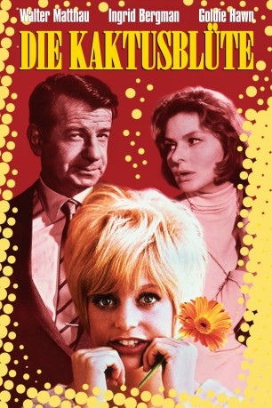

#10560 Die Kaktusblüte
Alternativ: Cactus Flower (Englischer Titel)
Auszeichnungen: 1 Oscars gewonnen 1 GoldenGlobes gewonnen
 
 IMDB-Wertung: 7.2 / 10
IMDB-Wertung: 7.2 / 10  Metascore: 0
Metascore: 0 
Julian Winston ist ein leichtlebiger Zahnarzt, dessen ausgeklügelter Lebensplan durch unvorhergesehene Ereignisse ins Wanken gerät. Er versucht, seine blonde Angebete, Toni, an der Nase herumzuführen, indem er ihr vorschwindelt, er sei verheiratet und habe Kinder. Als er erfährt, dass Toni seinetwegen Selbstmord begehen wollte, verspricht er, sie zu heiraten. Toni möchte aber nicht als Ehezerstörerin angesehen werden und besteht darauf, erst seine Frau zu sprechen. In seiner Not bittet Winston, seine seriöse und ernsthafte Sprechstundenhilfe Stephanie seine Frau zu spielen. Der Auftakt zu einer Serie der komischen Ereignisse...
Jahr: 1969
Dauer: 99 Minuten
FSK: 12
Land: USA Studio: Columbia Pictures CorporationTonspuren:
Untertitel:
Auflösung: 1080p (1920x1080) Größe: 7342 MB
Genre: Komödie, Liebe
Regisseur: Gene Saks
Drehbuch: Abe Burrows, Pierre Barillet, Jean-Pierre Grédy, I.A.L. Diamond
Soundtrack: Quincy Jones
Darsteller:
 Walter Matthau als Dr. Julian Winston
Walter Matthau als Dr. Julian Winston Ingrid Bergman als Stephanie Dickinson
Ingrid Bergman als Stephanie Dickinson Goldie Hawn als Toni Simmons
Goldie Hawn als Toni Simmons Jack Weston als Harvey Greenfield
Jack Weston als Harvey Greenfield- Rick Lenz als Igor Sullivan
 Vito Scotti als Señor Arturo Sanchez
Vito Scotti als Señor Arturo Sanchez- Irene Hervey als Mrs. Durant
- Eve Bruce als Georgia
- Mwako Cumbuka als Man dancing in club (uncredited)
- Tani Guthrie als Record Store Customer (uncredited)
- Merriana Henriq als Waitress (uncredited)
- Barbara Randolph als Cigarette Girl (uncredited)
- Ralph Roberts als Fourth Waiter (uncredited)
- Irwin Charone als Mr. Shirley - Record Store Manager
- Matthew Saks als Miss Dickinson's Nephew
- Linda Burton als Waitress (uncredited)
- Hy Chase als First Waiter (uncredited)
- Don Furneaux als Parcel Post Man (uncredited)
- Lee Harris als Third Waiter (uncredited)
- Peter Morrison Jacobs als Bearded Young Man (uncredited)
- Rick Lamson als Maitre D' (uncredited)
- Mary Jane Mangler als Dancer (uncredited)
- Lucy Saroyan als Dancer (uncredited)
- Bob Stiles als Second Waiter (uncredited)
- Sylvia Stone als Gray-Haired Woman (uncredited)
- George Winters als Mail Boy (uncredited)
Datei: X:\1969\Kaktusblüte, Die (1969, FSK12, 1920x1080).mkv seit 21.01.2019
Festplatte: Gemischt-01+Anime
 Es gibt insgesamt 22 Filme in der Gruppe '1969'
Es gibt insgesamt 22 Filme in der Gruppe '1969'